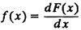
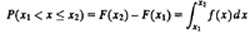
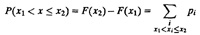
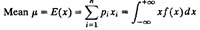
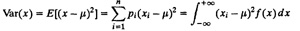
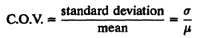
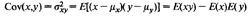
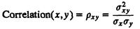
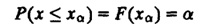
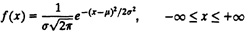

PART III
PROBABILITY THEORY AND STATISTICS
This part introduces the basic concepts of probability theory and statistics. An understanding of these concepts will help you analyze and interpret data properly. After reading Part III, you will be able to answer questions such as the ones that follow.
- 1. How should you report the performance as a single number? Is specifying the mean the correct way to summarize a sequence of measurements?
- 2. How should you report the variability of measured quantities? What are the alternatives to variance and when are they appropriate?
- 3. How should you interpret the variability? How much confidence can you put on data with a large variability?
- 4. How many measurements are required to get a desired level of statistical confidence?
- 5. How should you summarize the results of several different workloads on a single computer system?
- 6. How should you compare two or more computer systems using several different workloads? Is comparing the mean performance sufficient?
- 7. What model best describes the relationship between two variables? Also, how good is the model?
Performance analysts and system designers face such questions frequently. Knowledge of techniques and concepts discussed in this part is required for understanding the simulation and queueing theory concepts discussed later in Parts V and VI of this book.
CHAPTER 12
SUMMARIZING MEASURED DATA
The object of statistics is to discover methods of condensing information concerning large groups of allied facts into brief and compendious expressions suitable for discussions.
— Francis Galton
Summarizing measured data is one of the most common problems faced by performance analysts. A measurement project may result in several hundred or millions of observations on a given variable. To present the measurements to the decision makers, it is necessary to summarize the data. Several alternative ways of summarizing data and the appropriateness of each alternative are discussed in this chapter.
12.1 BASIC PROBABILITY AND STATISTICS CONCEPTS
In this and all following chapters, it is assumed that you have an understanding of basic probability and statistics concepts. In particular, you should be familiar with the following terms:
- 1. Independent Events: Two events are called independent if the occurrence of one event does not in any way affect the probability of the other event. Thus, knowing that one event has occurred does not in any way change our estimate of the probability of the other event.
- 2. Random Variable: A variable is called a random variable if it takes one of a specified set of values with a specified probability.
- 3. Cumulative Distribution Function: The Cumulative Distribution Function (CDF) of a random variable maps a given value a to the probability of the variable taking a value less than or equal to a:
Fx(a) = P(x≤a)
- 4. Probability Density Function: The derivative

of the CDF F(x) is called the probability density function (pdf) of x. Given a pdf f(x), the probability of x being in the interval (x1, x2) can also be computed by integration:

- 5. Probability Mass Function: For discrete random variable, the CDF is not continuous and, therefore, not differentiable. In such cases, the probability mass function (pmf) is used in place of pdf. Consider a discrete random variable x that can take n distinct values {x1, x2, . . ., xn} with probabilities {p1, p2, . . ., pn} such that the probability of the ith value xi is pi. The pmf maps xi to pi:
f(xi)=pi
The probability of x being in the interval (x1, x2) can also be computed by summation:

- 6. Mean or Expected Value:

Summation is used for discrete and integration for continuous variables, respectively.
- 7. Variance: The quantity (x – µ)2 represents the square of distance between x and its mean. The expected value of this quantity is called the variance x:

The variance is traditionally denoted by σ2. The square root of the variance is called the standard deviation and is denoted by σ.
- 8. Coefficient of Variation: The ratio of the standard deviation to the mean is called the Coefficient of Variation (C.O.V.):

- 9. Covariance: Given two random variables x and y with means µx and µy, their covariance is

For independent variables, the covariance is zero since
Although independence always implies zero covariance, the reverse is not true. It is possible for two variables to be dependent and still have zero covariance.
- 10. Correlation Coefficient: The normalized value of covariance is called the correlation coefficient or simply the correlation

The correlation always lies between -1 and +1.
- 11. Mean and Variance of Sums: If x1, x2, . .., xk are k random variables and if a1, a2, . . ., ak are k arbitrary constants (called weights), then
| E(a1x1 + a2x2 + ... + akxk) = a1E(x1) + a2E(x2) + ... + akE(xk)
|
For independent variables,
| Var(a1x1 + a2x2 + ... + akxk) = a21Var(x1) + a22Var(x2) + ... + a2kVar(xk)
|
- 12. Quantile: The x value at which the CDF takes a value α is called the α-quantile or 100α-percentile. It is denoted by xα and is such that the probability of x being less than or equal to xα is α:

- 13. Median: The 50-percentile (or 0.5-quantile) of a random variable is called its median.
- 14. Mode: The most likely value, that is, xi, that has the highest probability pi, or the x at which pdf is maximum, is called the mode of x.
- 15. Normal Distribution: This is the most commonly used distribution in data analysis. The sum of a large number of independent observations from any distribution has a normal distribution. Also known as Gaussian distribution, its pdf is given by
